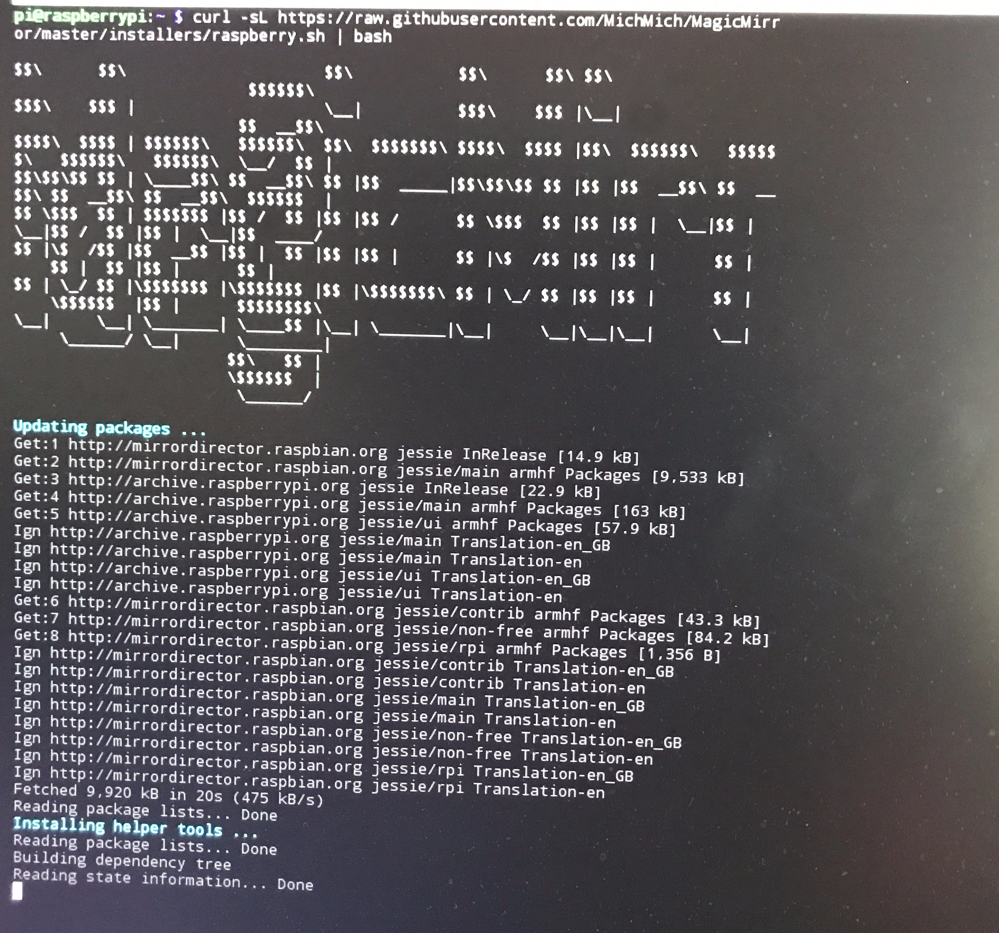

by Sirtaj Singh
Donwloading and setting up Mirror OS.
So the first task of building a mirror is the software. The original creator of the Magic Mirror created a program to create the base of Magic Mirror with the ability to add other custom information pieces know as modules created by others. Modules can be as simple as a clock to telling scores in a sports league or the current time of your commute using Google API. The program is called MirrorOS and can be downloaded on a Raspian with a simple bash command.
With a large community, there are a tonne of different modules that
you can add to personalize your Magic Mirror. These are downloaded
by choosing a directory and then running a
IAPI’s play a huge role in the magic mirror. A lot of the modules I
used got information from other sites such as Google Calendar and weather
sites. I also used RSS feeds to enable news from multiple sources.
These things are what makes the mirror so amazing. It centralizes
all this information in a simple screen that you can easily view when
getting ready to go to work or just to glance it to get some quick information.
The one that confused me the most was try
to get a network remote connected to the mirror. I used the recommended
module code and unfortunately that didn’t work. So, I tried a few
other things. I tried connecting by different networks and re-write
some parts of the code. Eventually I figured out that I had to
whitelist my IP address. Now, I wanted to display the IP dress
that needs to be connected for the mirror. And now another problem.
The entire program would crash when trying to enable this. Back and
forth looking and looking. I was frustrated. Turns out I forgot a comma. It was embarrassing.
A simple thing that caused me to stay up for an extra hours However, better
now then later I guess. I also was able to learn about a cool tool
because of this. jshint.com is a great site to help debug.
I was able to see the glaring syntax error because of this.
Here is a list of modules that I used:
And if you are interested,
here
is a link to my config.js from my Magic Mirror.